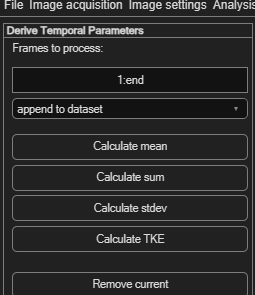

Deriving temporal parameters
Where spatial derivation works within one frame, this combines data across frames — averaging a whole time-resolved sequence into one representative result, or computing turbulence statistics.
Open via Plot → Temporal: Derive parameters (no keyboard shortcut).

Selecting which frames to include
Frames to process accepts the same range syntax used elsewhere
in PIVlab — e.g. 1,3,4,8:10. For a phase average (averaging
corresponding phases across repeated cycles rather than everything at once), enter multiple
rows: [1:10:end;2:10:end;3:10:end] produces one averaged result per row.
append to dataset (default) adds the result as a new frame alongside your existing data; replace all existing discards previous results first.
Available operations
| Button | Computes |
|---|---|
| Calculate mean | Mean velocity across the selected frames. |
| Calculate sum | Sum of displacements across the selected frames. |
| Calculate stdev | Standard deviation across the selected frames. |
| Calculate TKE | Turbulent kinetic energy across the selected frames. |
Each button appends one new result frame. Click Remove current to delete the currently displayed (appended) frame if you don't want to keep it.